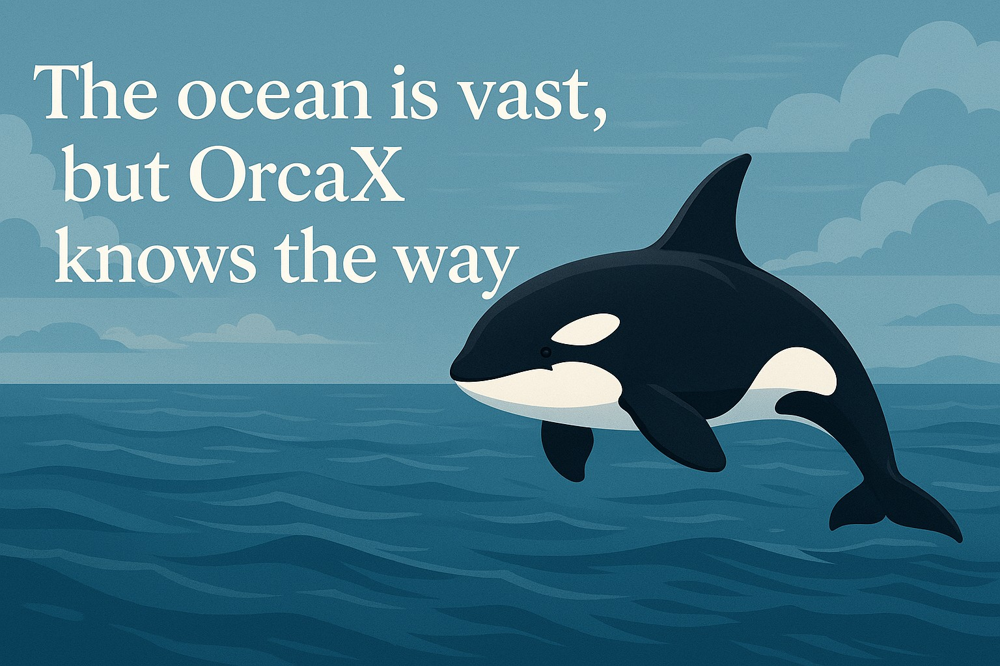

이 퍼즐은 끝이 아닌 새로운 시작의 열쇠.
우리는 지금까지 14개의 조각을 통해
탑승하고, 항해하고, 연결하며, 가치를 쌓아왔습니다.
하지만 이 퍼즐의 진짜 힘은
조각을 다 맞췄을 때 비로소 드러납니다.
그 완성은 끝이 아니라,
전혀 새로운 세계로 들어가는 입구입니다.
OrcaX는 단일 토큰이 아닙니다.
하나의 퍼즐을 맞추며 시스템을 배우고,
네트워크를 형성하며 공동체를 만들고,
실체 있는 토큰 경제 안에서 지속 가능한 미래를 창조하는
완성형 Web3 RWA 생태계입니다.
